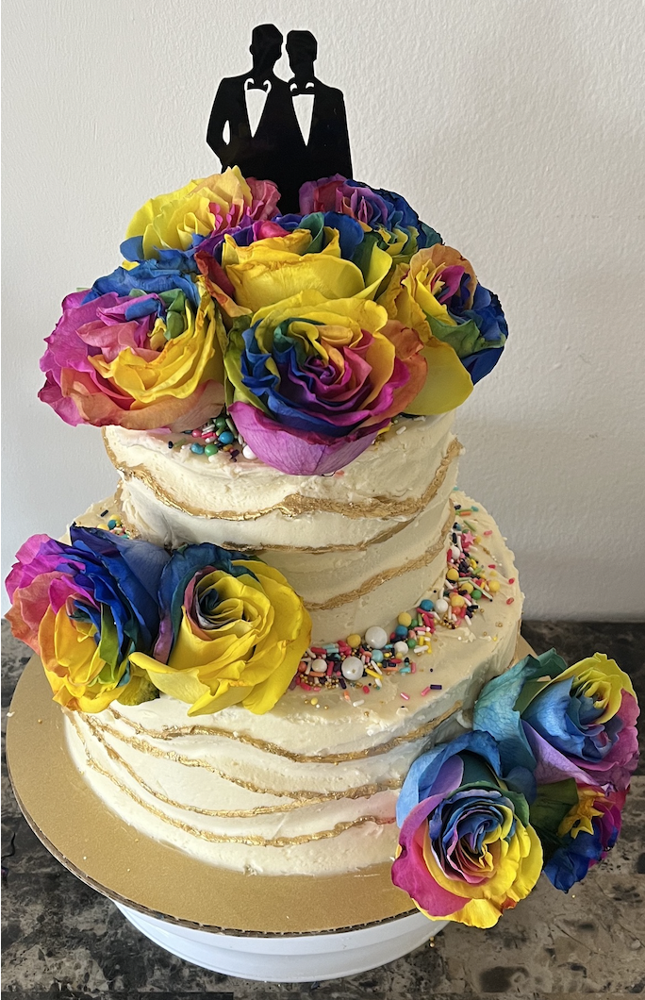
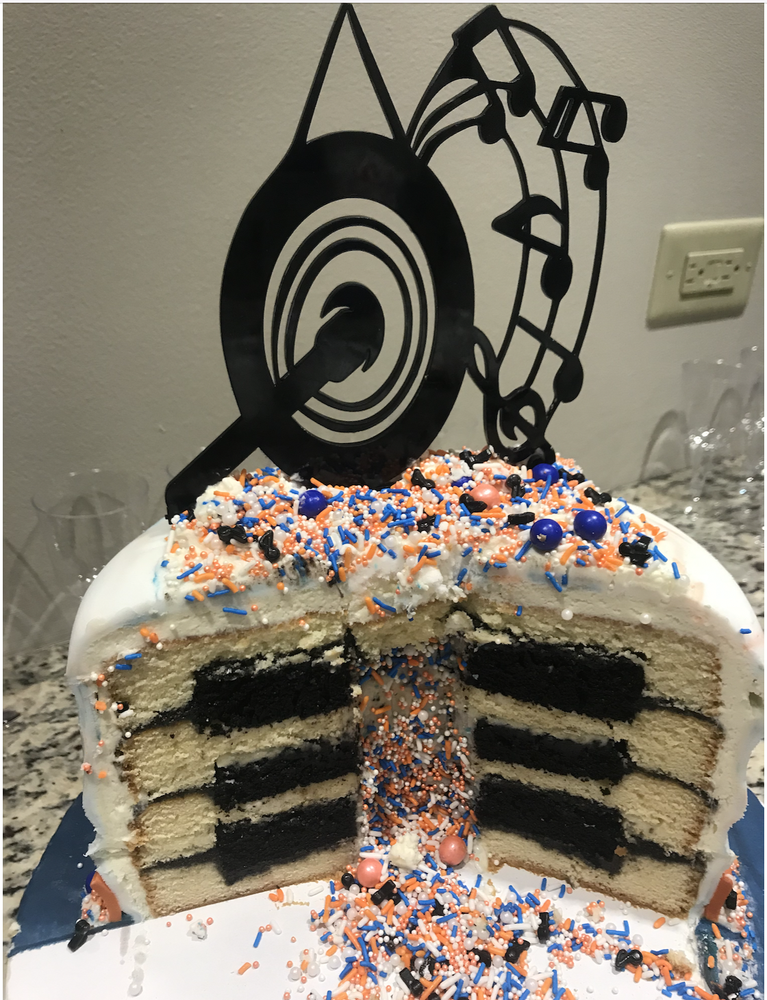
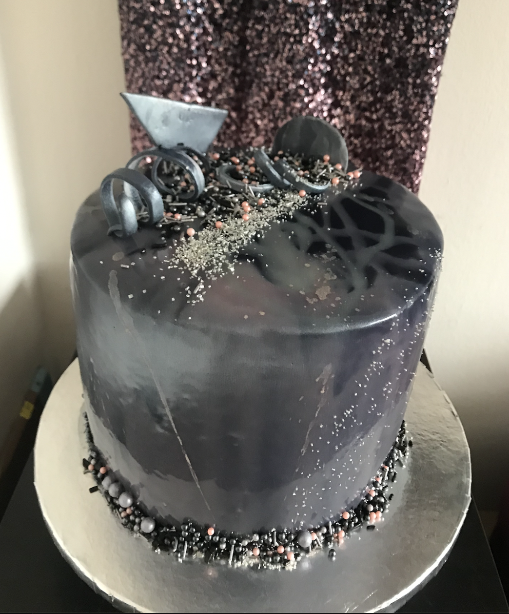
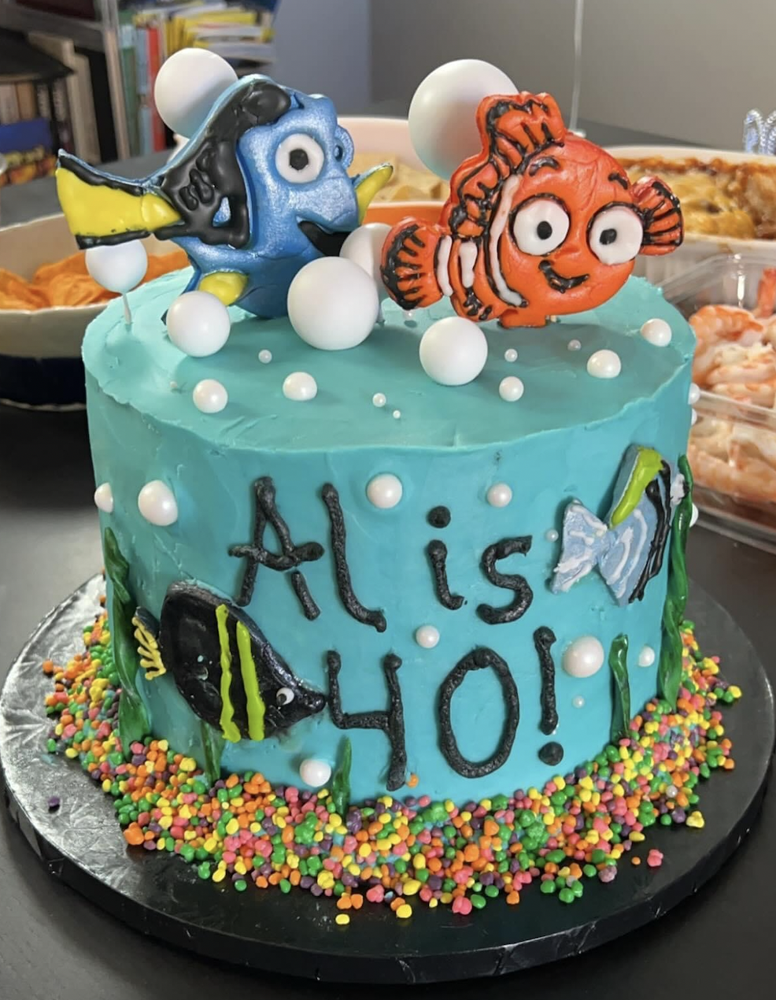
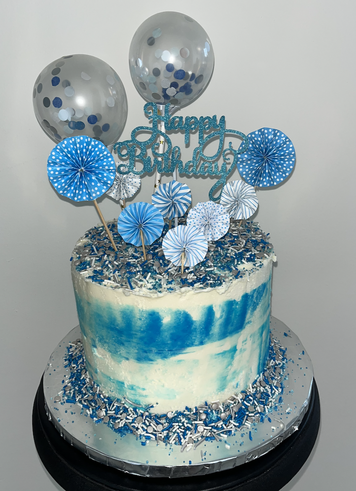
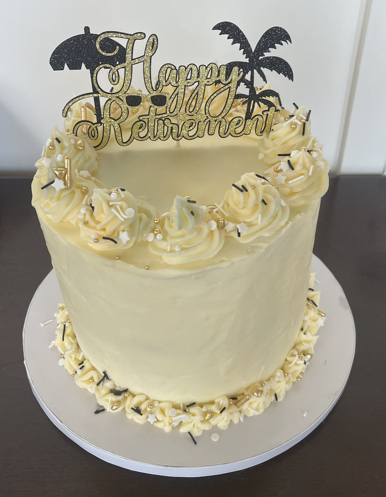

Welcome!
Published November 8, 2024
About Me
My background stems from Music and Mathematics. I have a Bachelor's Degree in Music Education with a minor in Mathematics from Illinois State University in Normal, Illinois. I have a Master's Degree in Music Education from VanderCook College of Music in Chicago, Illinois. I have taught all grade levels in the area of General Music, Band, Music Appreiciation, and Math. I am currently working on my certification from Coding Temple to become a Web Developer. In my spare time, I enjoy playing the flute with the South Loop Symphony and other groups as needed, attending some of the many concerts and social events that Chicago has to offer, baking celebration cakes, and running on the Lake Shore Path. I aspire to complete my 8th Chicago Marathon in 2025.
Projects
Flute Solo Performance with the Rockford Concert Band, Summer 2024
Cake Portfolio Sneak Peak
    
Skills
- HTML
- Python
- Google Suite (emphasis in Education)
- Microsoft Office Suite
- Communication & Public Speaking